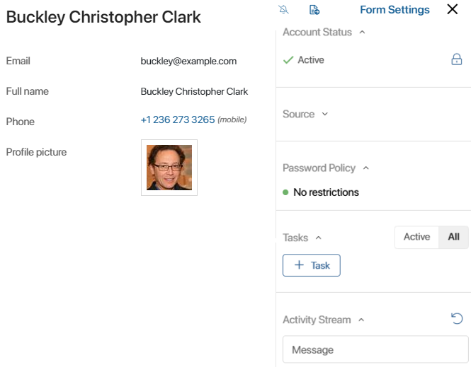

You can block an external user’s access to the portal:
- Manually. To do this, lock the user profile and the user's license will be unoccupied.
- Automatically. If the user provides incorrect login information.
In both cases, you can restore user’s access to the portal.
Restrict access to the portal manually
Go to System apps > External users. Open the profile of the user you need to lock. On the right side panel in the Account status section, click the icon.
After that, the account status on the user page will change to Locked. The user will not be able to log in to the service portal. Their license will be unoccupied.

Note that only users with the Active status can be locked.
The status of the user account remains Not registered until the user logs in to the portal for the first time.
Restore access to the portal
If you want to restore user’s access to the portal, go to System apps > External users. Use search to find the user you need and open their profile. On the right side panel in the Account Status section, click the icon.
The unlocked user will be able to log in to the service portal again.
Restrict access to the portal automatically
User access to the portal can be locked automatically if the user has entered incorrect login data. The allowed number of attempts to log in to the portal is set in the security settings.
The status of the external user remains Active. In the right pane of their page in the Password Policy block, the Account is locked mark appears.
To restore access to the portal, click on this mark and confirm the action.
In the portal settings, you can allow the user to recover the password from the login window. In this case, after unblocking they will be able to set new login data.
Found a typo? Select it and press Ctrl+Enter to send us feedback